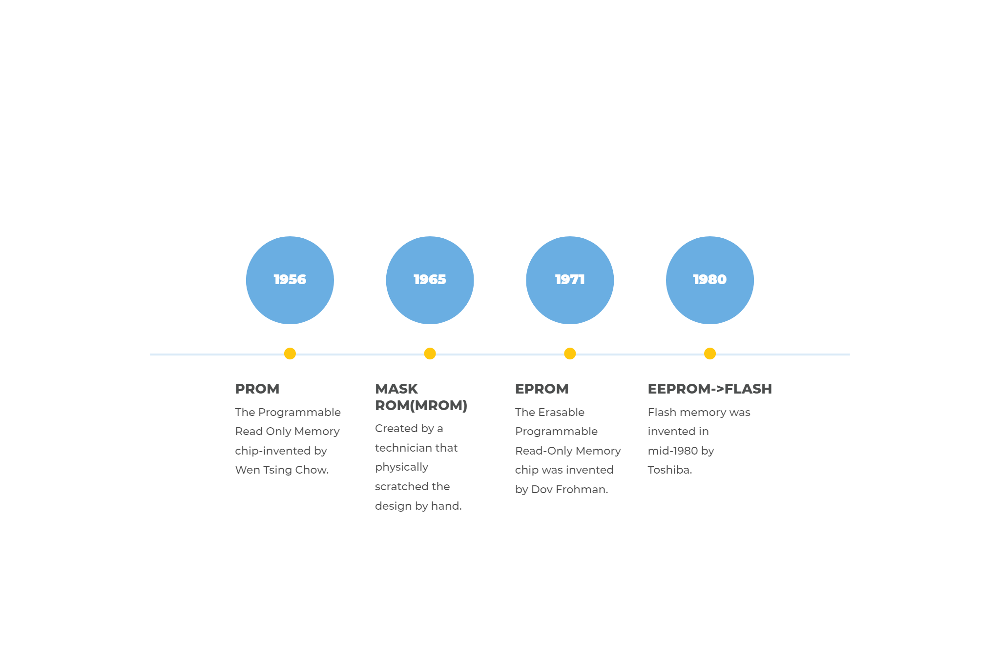

It is usually programmed during construction at the factory.
It contains instructions for reset and turn on!
ROM contains a grid of columns and rows. The way they intersect is what differentiates it from RAM. ROM uses a diode(semiconductor device that acts as a one-way switch for current and allows current to flow easily in one direction, but severely restricts it from flowing in the opposite direction) to connect the lines if the value is 1. Diodes allows current to flow in one direction but have a certain limit(forward breakover) that decides the current needed before the diode will allow it to pass on down the line. A ROM chip is able send charges greater than the forward breakover to the appropriate column with the chosen row grounded to connect at a certain cell. If a diode is located at that cell, the charge will be conducted through to the ground and the binary system will interpret the cell as a “1” to mean "on".
~The History of Read Only Memory~
Types of ROM include:

PROM(Programmable Read-Only Memory)
Can be written to only once by anyone after manufactured
Programmed by PROM programmer device
Written to by using high voltages to permanently destroy or create links(fuses or antifuses) by burning fuses within the chip.
Cheap to manufacture
More fragile than ROM
Good for prototyping and testing data before committing to pricey ROM manufacturing
EPROM (Erasable Programmable Read-Only Memory)
Able to be rewritten many times
In order to erase it's memory, you need a tool that emits a certain frequency of UV light
Each chip has a quartz window on top of it that allows the frequency to penetrate plastics and glass over it
Chip must be placed very close to light source(inch or 2) to work
Repeated exposure to UV will wear out the chip
Is able to handle 1000 cycles of erasing and reprogramming
To rewrite, the chip must be erased completely first
To programme the chip, it must be exposed to higher than usual voltage from a machine
After programming, the chip is covered with a label to protect from accidental erasure
If exposed to UV light for more than 10 minutes, the chip will be permanently damaged
Erasing is not selective(the whole chip will be erased)
MROM or Mask ROM (Mask Read Only Memory)
Contents of the chip are programmed by the integrated circuit manufacturer
The term "Mask" comes from integrated circuit fabrication, where sections of the chip are masked off during the process of photolithography(process of microfabrication to pattern parts on a thin film using photosensitive chemicals and UV lights. It's used in creating circuits)
To save money, companies must buy mask ROM in large quantities since they must contact and work with a foundry to produce a custom design.
The time between finishing the design for a mask ROM and receiving the finished product is very long because designing the chip is very time intensive.
Mask ROM is impractical for R&D(Research and Development) work since designers constantly need to alter the contents of memory as they develop a design.
If a product is shipped with defective mask ROM, the only way to fix it is to recall the product and physically replace the ROM.
EEPROM (Electrically Erasable Programmable Read Only Memory)
May be reprogrammed with or without erasure of earlier data
Chip doesn’t have to be removed from it's component to be rewritten
Doesn’t have to be completely erased(can change incrementally)
Instead of UV light frequency to erase it, apply electric field to erase targeted cells
Changes 1 byte at a time which makes it hard to use in many products that make quick changes to data stored on the chip because it's too slow(milliseconds per bit whereas ROM and RAM change nanoseconds per bit)
If a product is shipped with defective mask ROM, the only way to fix it is to recall the product and physically replace the ROM.
Flash EEPROM (Flash Electrically Erasable Programmable Read Only Memory)
Uses in-circuit wiring to erase by putting electrical field over the entire chip or on top a certain section called blocks
Much faster that EEPROM because it programmes data in chunks(usually 512 bytes instead of 1 at a time)